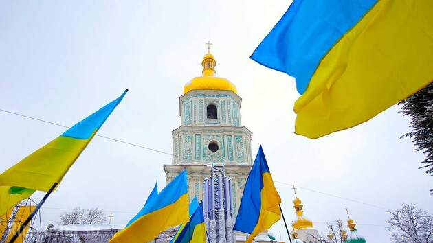
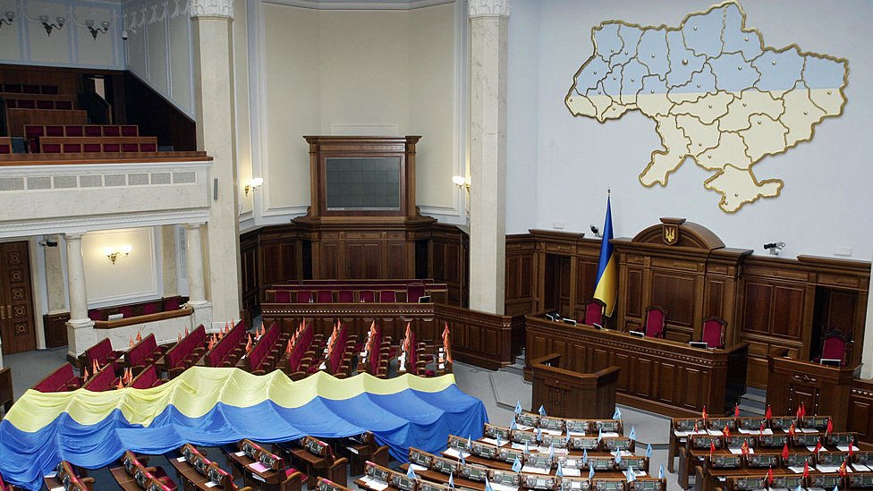
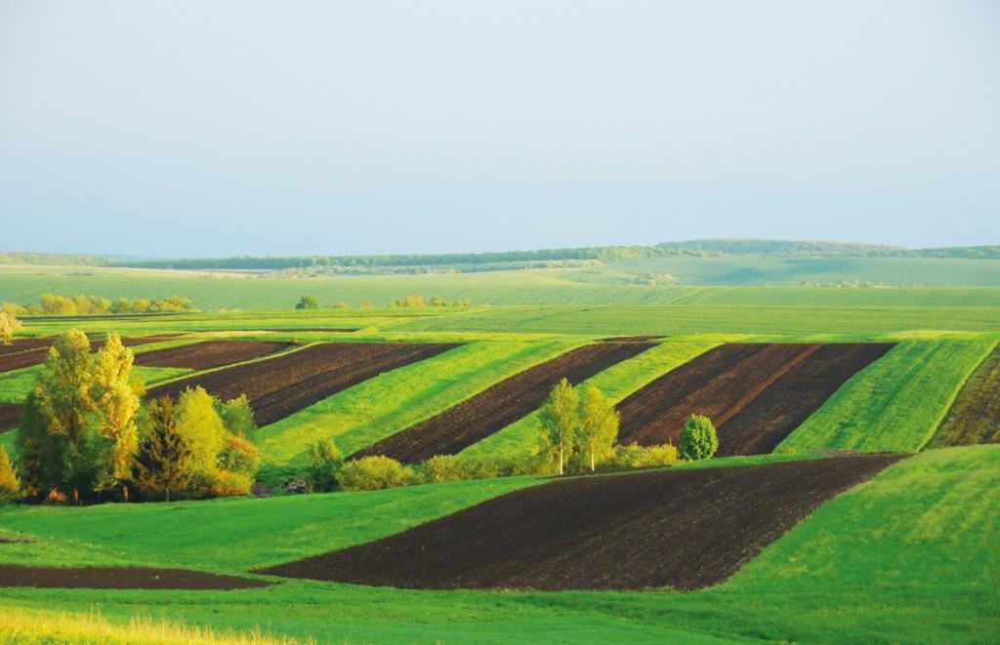
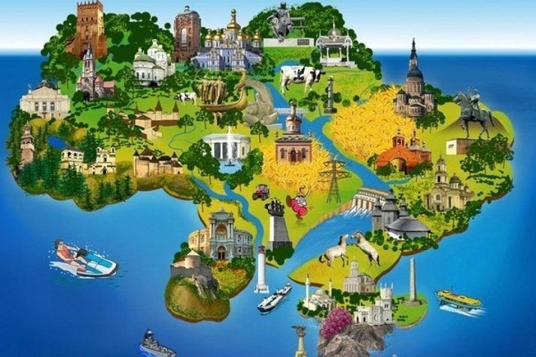

Загальні відомості
Україна – держава, розташована в центральній частині Європи, одна з найбільших на континенті.
Площа України становить 603,7 тис. кв. км. За територією та населенням Україну можна порівняти з Францією. Її сусіди: Білорусь, росія, Угорщина, Румунія, Молдова, Польща та Словаччина. На півдні країна омивається Чорним і Азовським морями. Через води Чорного моря межує з Туреччиною, Болгарією та Грузією.
Населення України
Населення України становить близько 48,4 млн. жителів, у тому числі міське – 68%, сільське – 32%. Середня густота населення – 81 житель на 1 кв. км. У країні, окрім українців, проживають представники більше 110 етнічних груп. Українці – 73% населення, росіян – 22%. Євреї, білоруси, молдавани, болгари, поляки, угорці, греки та інші становлять 5%.
Релігія
Україна - багатоконфесійна держава. Здавна традиційним релігійним вченням є православ’я. На релігійне життя країни впливають три православні церковні інституції, греко-католицька та римо-католицька церкви. Протестанти, іудеї та мусульмани становлять 5% від загальної кількості віруючих.
Державна влада
На політичній карті світу Україна як демократична правова держава з’явилась у 1991 році. Державна влада в Україні поділяється на законодавчу, виконавчу і судову. Найвищу юридичну силу має Конституція України. Основним Законом визначається та гарантується місцеве самоврядування. Україна - президентсько-парламентська республіка. Єдиним органом законодавчої влади є парламент – Верховна Рада України, конституційний склад якої – чотириста п’ятдесят народних депутатів. Президент наділяється повноваженнями глави держави, виступає від її імені, є гарантом державного суверенітету, територіальної цілісності України, дотримання Конституції, громадянських прав і свобод. Вищим органом у системі виконавчої влади є Кабінет Міністрів України. Кабінет Міністрів відповідальний перед Президентом України та підконтрольний і підзвітний Верховній Раді. Прем’єр-міністр України керує роботою Кабінету Міністрів, спрямовує її на виконання Програми діяльності Кабінету Міністрів, схваленої Верховною Радою. До складу України входять 24 адміністративні області, Автономна Республіка Крим та два міста республіканського підпорядкування – Київ і Севастополь.
Найбільші міста
До складу України входять 24 адміністративні області, Автономна Республіка Крим та два міста республіканського підпорядкування – Київ і Севастополь. Найбільші міста держави – Київ, Харків, Дніпропетровськ, Донецьк, Одеса, Львів. Найбільші за площею області України – Одеська (33,3 тис. кв. км), Дніпропетровська та Чернігівська (по 31,9 тис. кв. км), за кількістю населення – Донецька (4,8 млн. жителів), Дніпропетровська (3,6 млн. жителів) і Харківська (2,9 млн. жителів). Найменшими є відповідно Чернівецька (8,1 тис. кв. км), Закарпатська (12,8 тис. кв. км), Тернопільська (13,8 тис. кв. км), Івано-Франківська (13,9 тис. кв. км) за площею і Чернівецька (0,9 млн. жителів), Волинська і Тернопільська (1,1 млн. жителів) – за населенням. Більшість областей України мають вихід до її державних кордонів. П’ять областей мають вихід до морів – Чорного та Азовського.
Повністю внутрішніми є тільки п’ять областей:
- Хмельницька
- Черкаська
- Кіровоградська
- Полтавська
- Дніпропетровська

Природні ресурси
За запасами природних ресурсів Україна посідає провідне місце в Європі, зокрема перше місце за кількістю орних земель, за запасами залізної й марганцевої руд, сірки, кам’яного вугілля, калійної і кам’яної солей та інших корисних копалин. Земельні ресурси. Забезпеченість України сільськогосподарськими угіддями дуже висока і становить близько 1,2 га на одного жителя. Площа орних земель на кінець 2001 року становила 32 537,1 тис. га, пасовищ – 5 517,0 тис. га. У структурі ґрунтового покриву України домінують різновиди чорноземів, поширені майже на 55% площ орних земель.
Українські чорноземи унікальні.
Вони сформувалися під степовою рослинністю в умовах клімату, який, на відміну від степів Євразії, найбільш м’який та вологий, що зумовлено впливом Атлантики і південних морів. Чорноземи поширені в лісостеповій та степовій фізико-географічних зонах України. В структурі ґрунтового покриву України площа чорноземів становить 74 млн. га, з яких 57% - це сільськогосподарські угіддя (42 млн. га) і 68% ріллі (32 млн. га). За своїм фізичним, хімічним, агрохімічним та мінералогічним складом серед ґрунтоутворювальних порід український чорнозем - найкращий.
Туризм
Особливості географічного розташування та рельєфу, сприятливий клімат, багатство природного, історико-культурного й туристично-рекреаційного потенціалу України створюють усі можливості для всебічного задоволення пізнавальних, оздоровчо-спортивних і духовних потреб вітчизняних та іноземних туристів. Найпопулярнішими туристичними регіонами є Крим, Причорномор'я, Придністров'я, Поділля і Волинь, міста Київ, Одеса, Львів. Ці осередки значних природних, історичних та культурних ресурсів найперспективніші для організації туристичної діяльності. Особливу гордість країни становить її природно-заповідний фонд, що налічує близько 6 тис. об'єктів загальною площею 980 тис. га, з яких найвизначніші - Карпатський біосферний заповідник, Карпатський національний природний парк, Шацький національний парк, Синевірський національний парк, заповідник Асканія-Нова.
